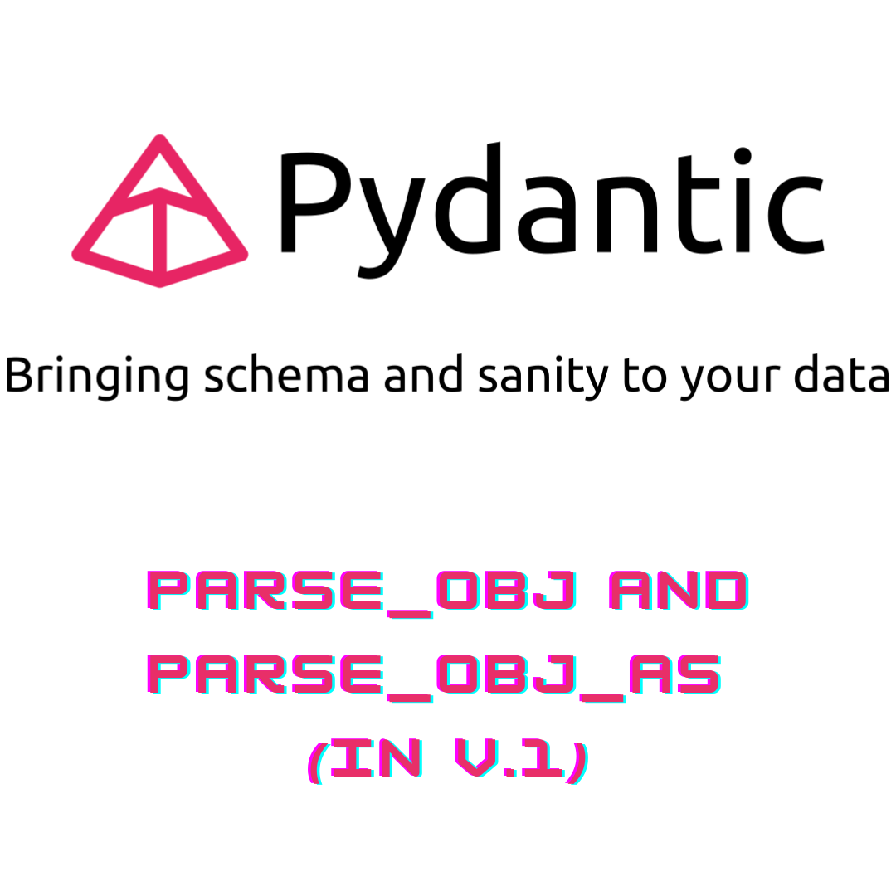

Pydantic parse objects with parse_obj and parse_obj_as methods
Effortless Data Parsing: Deep dive into Pydantic’s parse_obj and parse_obj_as methods.

Converting objects and files into Pydantic models? All you need to know about parse_obj function
Converting objects and files into Pydantic models might sound like a magical transformation, and in a way, it is! In this enchanting journey of data manipulation, we’re going to unveil all the secrets you need to know. Pydantic, with its data validation superpowers, not only helps you create well-structured models but also allows you to effortlessly breathe life into them from various sources.
Imagine turning a plain, old Python dictionary or even a JSON file into a fully-fledged Pydantic model with just a few lines of code. It’s like casting a spell! Whether you’re dealing with API responses, database records, or just want to make sense of your data, Pydantic has your back. So, prepare to unlock the magic of converting objects and files into Pydantic models, and let’s embark on this captivating adventure together!
How to load a Pydantic model from an object. Pydantic parse_obj example
Hey there, Pydantic enthusiasts! If you’ve ever delved into the world of Pydantic, you know it’s a superhero in the realm of data validation and parsing in Python. But what’s the deal with loading a Pydantic model from an object, you ask? Well, it’s an exciting adventure, and in this Pydantic parse_obj example, we’re about to embark on a thrilling journey together!
Picture this: you’re dealing with API requests, taming wild database records, or just trying to wrangle some unruly data. That’s where Pydantic’s parse_obj swoops in like a caped crusader, making data validation and transformation a total breeze. So, fasten your seatbelts, and let’s learn how to wield this incredible power and turn your Python data-handling tasks into a supercharged, fun-filled experience!
Certainly! Here’s an expanded section that dives deeper into the topic of “pydantic parse_obj” with more in-depth information, examples, and use cases:
In-Depth Exploration of Pydantic’s parse_obj Method Pydantic’s parse_obj method is a powerful feature that deserves a closer look. This method is a cornerstone of Pydantic’s data parsing capabilities, allowing you to seamlessly transform raw data into well-structured Pydantic models. In this section, we’ll delve deeper into how parse_obj works, provide practical examples, and explore its versatile use cases.
Understanding parse_obj:
Pydantic’s parse_obj method is a powerful feature that deserves a closer look. This method is a cornerstone of Pydantic’s data parsing capabilities, allowing you to seamlessly transform raw data into well-structured Pydantic models. In this section, we’ll delve deeper into how parse_obj works, provide practical examples, and explore its versatile use cases.
At its core, parse_obj is designed to take unstructured data, such as dictionaries or JSON objects, and convert them into Pydantic models with defined structures. This method is particularly useful when dealing with data from various sources like API responses or user inputs.
Here we could see a basic usage:
from pydantic import BaseModel, Field, parse_obj_as
from typing import Literal, Optional, Annotated, Union
from datetime import date
class ComputerScienceApplicant(BaseModel):
class Config:
orm_mode = True
name: str
degree: Literal["ComputerScience"]
birth_date: date | None # preferred now vs Optional[]
class BiologyApplicant(BaseModel):
name: str
degree: Literal["Biology"]
birth_date: date | None
applicant_dict = {"name": "Diana", "degree": "ComputerScience", "birth_date": date(2022,1,1)}
ComputerScienceApplicant(**applicant_dict)
ComputerScienceApplicant.parse_obj(applicant_dict)
ComputerScienceApplicant.from_orm(ComputerScienceApplicant(**applicant_dict))Note that, even you could achieve it by different methods, Pydantic parse_obj method is preferred over the dict unpacking way.
The correct usage of parse_obj_as and parse_file_as.
From converting between BaseModels to parse_obj into discriminated union.
Pydantic offers a nifty standalone utility function known as parse_obj_as that’s like a versatile tool in your Python utility belt. It enables you to apply Pydantic’s parsing wizardry in a more flexible and on-the-fly manner, allowing you to work with a broader range of Pydantic-compatible types.
Why is this so cool, you could ask? Well, think of it like this: you’re in a situation where you need to parse results into a type that doesn’t directly inherit from BaseModel. This function is handy also to parse and object into a Pydantic discriminated union without creating another class. For example:
Applicant = Annotated[Union[ComputerScienceApplicant, BiologyApplicant], Field(discriminator="degree")]
#Applicant.parse_obj({"isPrimary": True, "dateOfBirth": date(2022,1,1)})
parse_obj_as(Applicant, {"name": "Paul", "degree": "Biology", "birth_date": date(2012,1,1)})You can explore more about Annotated union discriminator post.
´
Load Pydantic model from file with parse_file_as
Pydantic offers us an extra layer for load a file into a Pydantic model directly. This feature can be especially handy when you need to work with structured data stored in files such as JSON or other formats. Here there is a simple example:
That under-the-hood, it is a few code lines / time-saving tool that is calling to load_file, and then parse_obj_as as the previous example.
How to parse a list of objects to a list of Pydantic BaseModels?
OK, so we already get how to convert raw objects into Pydantic models. If you have any doubt, feel free to contact us.
So what about nested Pydantic models? For example, following the previous example, we need a list of Applicants.
- In Pydantic V1:
This is now possible using the already commented parse_obj_as. We could use now the base type
listand do it without the need of an specific object.
users = [
{"name": "Paul", "degree": "ComputerScience", "birth_date": date(2012,1,1)},
{"name": "Celia", "degree": "Biology", "birth_date": date(1994,5,12)}
]
parse_obj_as(list[Applicant], users)An alternative way to do that, if you want to create a new object representative of this list, them:
Note that if you convert it to .dict() the root key is conserved, but if you do it with .json() method, the __root__ key will disappear. You also have the option to overwrite the dict method as follows:
class ApplicantList(BaseModel):
__root__: list[Applicant]
def dict(self):
return super().dict()['__root__']
ApplicantList.parse_obj(users).dict()- In Pydantic V2: Use Type Adapter as we state in that post, in order to do:
from pydantic import TypeAdapter
users = [
{"name": "Paul", "degree": "ComputerScience", "birth_date": date(2012,1,1)},
{"name": "Celia", "degree": "Biology", "birth_date": date(1994,5,12)}
]
ta = TypeAdapter(List[User])
m = ta.validate_python(users)
´
Pydantic list of different types
When you need to work with a list containing different types of data, Pydantic offers a straightforward solution. Here’s how you can define a Pydantic model for a list that accommodates different data types:
class ApplicantList(BaseModel):
__root__: list[ComputerScienceApplicant | BiologyApplicant]
ApplicantList.parse_obj(users)Convert between Pydantic BaseModels
Also it could be convinient to mutate and convert between different BaseModels. Whether you’re migrating from one data model to another, integrating data from various sources, or even orchestrating a complex data transformation dance, Pydantic simplifies the process. With just a few lines of code, you can mutate, merge, and seamlessly convert between different BaseModels.
In this exmple we are converting from a regular BaseModel to another, without existing inheritance between them.
from pydantic import BaseModel, parse_obj_as
from enum import Enum
class PetTypeEnum(Enum):
DOG = "dog"
CAT = "cat"
BIRD = "bird"
class Pet(BaseModel):
name: str
pet_type: PetTypeEnum
class TypelessPet(BaseModel):
name: str
meww = Pet(name="Meww", pet_type="cat")
typeless_meww = parse_obj_as(TypelessPet, meww)
assert meww.pet_type.value == "cat"
assert typeless_meww.name == meww.name
assert not hasattr(typeless_meww, "pet_type")
´
Stay updated on Pydantic and Python tips
Hopefully, this post has helped familiarize you with the usage of unions and discriminators in Pydantic, showcasing some of its functionalities and enabling you to enjoy their benefits.
If you want to stay updated…
Carlos Vecina
Senior Data Scientist at Jobandtalent
Senior Data Scientist at Jobandtalent | AI & Data Science for Business